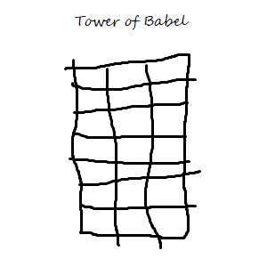
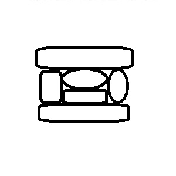
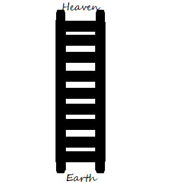

I am a son of God who has so much to be greatful for, and who loves his Heavenly Father so very much.
Answer 2
It make me want to strive to make him proud and to keep his commandments.
Going through the repentance process and feeling his love for me.
Answer 3
Knowing that I am a child of God means that I will be able to live for eternity and will have an eternal family. Remembering that I am a child of God will help me to not commit sin.
Answer 4
If I follow the commandments of God I will know right from wrong. When I first thought that I needed to repent.
Answer 5
I will always need to remember these doctrine and these principles in order to live the commandments.
It will help me to remember where I came from and what I want to be worthy to go back to.
Answer 6
Debbi Tolman
Answer 7
I have studied Moses 1 and completed this lesson on (04/08/18).
Day 2
Answer 1
Scripture
Moses 2:2-5
Moses 2:6-8
Moses 2:9-13
Moses 2:14-19
Moses 2:20-23
Moses 2:24-31
What happend
Made light
Made an atmosphere
Made dry ground and plants
Made the sun
Made creatures of the sea and of the air
Made creatures of the land and made men and women
Answer 2
They are amazing and are so knowedgeable about how everything works. I want to be as knowledgeable as them someday.
Answer 3
I would ask the investigator to read those verses and then I would quote president Monson in what he said.
I would have them read the family proclamation and I would read Genesis 1:27 to them.
I would ask him to list all the good things about his body and then I would emphasise that there are all of those good things and more because our Bodies are gifts from our Heavenly Father.
Answer 4
We are literal children of God and to show his love for us he created our bodies in his image. Being created in the image of God means that he loved us enough to have us represent him, and because we represent him we should try to act the way he woulod want us to act. Knowing that my body was created in the Image of God makes me feel like I should treat my body like a temple.
Answer 5
I have studied Moses 2(also Genesis 1; Abraham 4) and completed this lesson on (04/09/18).
Day 3
Answer 1
We can spend the day reading/watching and pondering Conference talks and scriptures.
I feel like I have had more energy in the following week.
Answer 2
Everything was made spiritually before it was made physically, and God breathed life into man after he created man from the dust of the earth.
Answer 3
Marriage is a sacred and holy covenant between a man and a woman. When you get married it is not only you and your spouse it is also Heavenly Father because it is with his preisthood power that a Husband and Wife can be sealled together for eternity. Without Marriage we can't see our Heavenly Father again, and we wouldn't be able to live with our spouse for eternity because in marriage you are sealed for eternity.
Answer 4
The man isn't complete without the woman neither the woman without the man. There are strengths and weaknesses to both and they strengthen eachother.
Answer 5
By having discussions about choices in the marriage and not leaving any choice up to one person(unless that is the choice).
President Nelson and his wife because of the way he talked to his wife and the way his wife talked to him and the way that they looked at eachother.
Answer 6
I am preparing for a mission and trying to treat my family and everyone I meet with respect.
Answer 7
I have studied Moses 3(also Genesis 2: Abraham 5) and completed this lesson on (04/09/18).
Day 4
Answer 1
Conditions We Experiece
Solution Prepared in Advance
Satan seeks to deceive and blind us so that he can lead us into captivity.
Physical imperfections and pain
Emotional pain
Jesus Christ was chosen from the beinning (in the premortal existence) to save us.
Answer 2
Jesus wanted the glory to be the Fathers but satan wanted the glory for himself.
Christ was the Fathers chosen and beloved from the beginning.
First Item in "Solution Prepared in Advance" in Answer 1
Answer 3
First Item in "Conditions we experience" in Answer 1
Answer 4
2nd and 3rd items in "Conditions we experiece" in Answer 1
Answer 5
My Grandma's death and getting injured.
Answer 6
I have studied Moses 4 (also Genesis 3) and completed this lesson on (04/14/18).
Unit 3
Day 1
Answer 1
We can have his spirit in our lives and have Heavenly guidance.
When obeying what my parents tell me even if I don't agree with it. It always seems to work out.
Answer 2
It was to be a perfect lamb and the first born and Jesus Christ is Heavenly Father's first born and he is perfect.
Answer 3
Because they learned that there is a way to be forgiven and that they could see our Heavenly Father again.
Answer 4
Because of the Atonement of Jesus Christ, I can recieve a remission of my sins and see Heavenly Father again.
Answer 5
I have studied Moses 5:1-11 and completed this lesson on (04/15/18).
Day 2
Answer 1
Because it wasn't a living sacrafice and it wasn't the first born.
Because Satan wants us to rebel against God and when we are angry we are rebelling against God.
Satan wants us to suffer like he does.
Answer 2
It shows his love for us because it shows that he doesn't want anything bad to happen to us.
To stay away from pornography and to head the teachings of the prophet.
Answer 3
Because not having the lord in your life feels so lonely and incomplete.
Answer 4
With willingness to murder his own brother.
Because if nobody knew that it happend then Cain wouldn't get in trouble.
It is the complete opposite the Lord wants us to "confess them and forsake them" whereas Lucifer wants us to keep them a secret.
Answer 5
If I harken unto Satan's temptation then I will be cut off from the Lord. This is important to know because I always want to have the Lord with me.
In my rebellious years, and it felt so lonely.
It can keep me obeying the Lord's commandments and stop me from commiting sin.
Answer 6
I have studied Moses 5:13-59 (also Genesis 4) and completed this lesson on (04/15/18).
Day 3
Answer 1
Because if the parents don't show there love for God how will the children know that they are supposed to love God and how are they supposed to know that there is a God?
Whenever I have sinned and told my dad what I have done he's never yelled at me for it or condemned me because of it instead he always takes it as an oportunity to teach me more of this amazing gospel and I am so grateful for that.
Answer 2
By showing them all the ways that God has blessed my life.
It feels kind of strange because it's for children that I don't have yet, but it also feels good because I will be able to remember the experiences and my posterity will be able to learn of them.
Answer 3
It will give them a motive to do what the Lord commands.
Answer 4
It means that we can see what the Lord has planned and what he wants us to do.
So that I could see the big picture instead of just the portion I see with natural eyes.
Answer 5
I have studied Moses 6 (also Genesis 5) and completed this lesson on (04/15/18).
Day 4
Answer 1
I think being of one heart and one mind means that you and the other person have the same goals and I feel it happening when a brother or sister and I are of service to others.
I felt cared for by other members when I was in my rebellious years and the members of this amazing church still reached out to me to see what they could do for me.
Answer 2
I will look for those in need and see if there is any way I can help them.
Answer 3
I can find ways to serve each of the members of my family and of my ward.
Answer 4
He wept
It teaches us that he truly does love us and it makes him sad when we are sinnful.
Answer 5
All throughout Heritage Tour I could feel his presence and his love for, not only me but, all of those on Heritage Tour.
Answer 6
I have studied Moses 7 and completed this lesson on (04/15/18).
Unit 4
Day 1
Answer 1
Scripture:
Moses 8:16-18, 28
Moses 8:19-22
Moses 8:23-26
Actions of Rebellious people
Violence
Hearkening not
Not repenting
Answer 2
Evil and wicked
Wicked, Evil, Disrespectful, Light Hearted
Answer 3
Because they are sons of God they don't need to repent.
Because our sins have already been atoned for we don't need to do anything.
Answer 4
The lord invites us to repent in the scriptures in multiple places.
How satan will take a hold of us little by little unitl it is nearly impossible to get away.
Extreme happiness
Answer 5
I have studied Moses 8: Genesis 6:1-13 and completed this lesson on (04/16/18).
Day 2
Answer 1
By building a boat even though it didn't look like a flood was possible, and even though he didn't really know how.
By surviving with his family and having all of his posterity be on the earth.
Answer 2
Fear and also gratitude for the Lord and Noah because Noah listened to the Lord.
Sheer panic and resentment because I didn't hearken to the words of the Prophet.
Answer 3
Going to church every sunday protects me from potentially doing something I would regret.
Doing seminary makeup work.
Answer 4
I have studied Genesis 6:13-9:29 and completed this lesson on (04/15/18).
Day 3
Answer 1

Answer 2
Because we don't want to have undesirable consequences come upon ourselves or others.
Somebody that thinks that pornography brings them happiness will hurt themselves by damaging their relationships with others. It will hurt others by damaging those same relationships. It will also damage your relationship with God.
Answer 3
The atonement because I would still be in the slumps that I was in last year without the forgivenss that I have been given because of the atonement. This gospel in general gives me happiness. Seeing anyone smile also makes me happy.
Answer 4
By listening to music that invites the spirt.
Answer 5
I have studied Genesis 10-11;Abraham 1:1-7 and completed this lesson on (04/15/18).
Day 4
Answer 1
I am a son of a living and loving God who is trying to make his Father on earth and especially his Father in Heaven proud. I am a brother of Jesus Christ who suffered and died on the cross and atoned for my sins in Gethsemane. am a amature programmer that is trying to catch up with seminary makeup work. I am a life long learner.
son of a living God and brother of Jesus the Christ.
Answer 2
Responsibilities and Blessing of the Abrahamic Covenant
Be a minister of Jesus Christ.
Hearken to the Lord's voice.
Receive land for an everlating possession.
Answer 3
By serving them every day and every chance we get.
By being an example of a disciple of christ.
Answer 4
I feel grateful for Abraham because he was a prophet of Heavenly Father.
Answer 5
I am going to prayfully ponder the scriptures instead of just reading them.
Answer 6
I have studied Abraham 2 and Genesis 12 and completed this lesson on (04/17/18).
Unit 5
Day 1
Answer 1
The world tells me I am great if ...
I have a great body.
I am rich.
I'm famous.
I get a lot of likes on a picture on a social media platform.
Real qualitites of greatness include ...
obeying God's commandments.
being obedient to gain intelligence.
learneing from our mistakes.
loving Heavenly Father.
Answer 2
Because that means Jesus knows what he is talking about he isn't crazy, and he does have a part in the plan.
Answer 3
It makes me want to make sure that I am doing everything in my power to obey the commandments of Heavenly Father.
Answer 4
It was kind of strange to say but it felt good.
Answer 5
I have stuided Abraham 3 and completed this lesson on (04/17/18).
Day 2
Answer 1
She has been willing to talk with me about things that bother me, and she always can tell if I'm not feeling happy.
That to let somebody know that you truly care about them you have to be willing to put them first.
Answer 2
At home when my family is getting irritated, at school if somebody is getting bullied, always and everywhere.
Answer 3
He was sinful like the people of sodom.
By the friends they hang out with and the places they go both mentaly and physically.
Answer 4
Because the kind was sinful and got his things through sinful acts.
That we should turn away from sinful offerings and from sinful situations.
Answer 5
I have stided Genesis 13-14 and completed this lesson on (04/19/18).
Day 3
Answer 1
Money for mission
Money for college
Letting those I love down
Letting God, whom I love most of all, down
Commiting sin again
Hurting those I love
Not choosing the best good that comes my way
Having faith that Heavenly Father will keep his promises will help me have peace by letting me know that everything will work out.
Answer 2
On a mission, when a loved one is suffering, and when experiencing a major change in your life. I can remember and trust in the Lord by remebering that he is the literal father of my spirit.
Answer 3
Not being able to lift very much because my back hurts, doing four years of seminary makeup work in one year. I have noticed him helping me through being able to do the makeup work and through me still being able to lift.
Answer 4
I have studied Genesis 15-16 and completed this lesson on (04/19/18).
Day 4
Answer 1
I want to do the best I can to remember the lord and raise my children in the gospel, and I want to do the best I can in everything I do.
I want to be a father who raises his children in the church and with a knowledge that they have a Father in Heaven that loves them perfectly, and I also want to be a programmer.
"Be" is more occupational whereas "do" is more an action.
Answer 2
All of the blessings that Abraham , Isaac, and Jacob were promised.
Answer 3
They will grow up in a family that is eternal and that is in a sacred covenant with eachother and God. They will grow up with a knowledge of the Gospel.
Lots of happiness and love between the members of the family.
Answer 4
He wants me to get married and ceiled in the temple.
He wants me to be a worth father and husband.
Answer 5
Me coming back to the gospel after two-ish years of rebeling against it, and by forgiving me of all of my sins.
Answer 6
The commandment to multiply and replenish the earth. The family proclamation that says marraige should be between a man and a woman.
It doesn't allow us to have children and it is contrary to what he says marraige should be.
Answer 7
I have studied Genesis 17-18 and completed this lesson on (04/19/18).
Unit 6
Day 1
Answer 1
Because of the temporary pleasure that it brings, and it is dangerous to do so because you can easily fall back into commiting those sins.
Keep Jesus Christ as the center of their life and to avoid even thinking about those sins by receiting scriputres or music in their head.
Answer 2
I think he would've been able to avoid sin and to live a christlike life.
Answer 3
Pornography, drugs, corrupted music
Not having the spirit in my life, becoming addicted, and losing/hurting loved ones.
It could reflect poorly on them, it could damage the relationship they have with you, and it could complicate their lives and lead them away from the spirit.
Answer 4
I have studied Genesis 19 and completed this lesson on (04/19/18).
Day 2
Answer 1
When we hearken to the Lord's warnings he blesses us.
When my friend got me to go on Heritage tours.
This warning got me to come back to the Church and to reastablish a relationship with God and Jesus Christ.
Answer 2
Abraham and Sarah were able to have a child and God didn't forget about them it just took some time. God has not forgotten about you he loves you and has a plan for you.
In losing a loved one, and having your parents get a divorce.
Answer 3
I think it was practically unbareable for him because it was his only son, and I think it would've been just as difficult if he multiple children. I think he felt like the Lord was asking too much of him.
Answer 4
Love thy neighbor as thyself, Honor thy father and thy mother, keep the sabbath day holy, thou shalt not kill, thou shalt not bare false witness.

If we are willing to obey the Lord's commandments it shows we love him by showing him that we will serve him.
Answer 5
I have studied Genesis 20-22 and completed this lesson on (04/20/18).
Day 3
Answer 1
Putting off the natural man, walking away from friends who aren't making good choices.
Answer 2
Character Traits of Rebekah
Fair
Damsel
Kind
Christlike
Answer 3
Humility, I will try to develop this by praying about it and thinking of what I say more.
Answer 4
It will let them know that they can still get married after this life.
It helps me know that I will eventually get married and I want to be worthy for when I do.
Answer 5
I have studied Genesis 23-24 and completed this lesson on (04/20/18).
Day 4
Answer 1
Sex, pornography, masterbation
Pornography could make me lose blessings because I wouldn't be able to have the Holy Ghost with me.
Answer 2
Because I know that the plan of salvation will be executed no matter what.
Answer 3
Done
Answer 4
I have studied Genesis 25-27 and completed this lesson on (04/20/18).
Unit 7
Day 1
Answer 1

Baptism, Enownments, Ceiling
Marriage
Answer 2
Because it means that we can be with our families forever and it means that we can see our Heavenly Father again.
I will strive to keep the Lord as the center of my life.
Answer 3
If we obey the Lords commandments then he will bless us.
Answer 4
When I got to go on the LDS Heritage Tour over the summer.
Answer 5
I have studied Genesis 28-30 and completed this lesson on (04/21/18).
Day 2
Answer 1
When you stive to obey a command from the Lord, He will: Bless your efforts by providing a way for you to fulfill the command, even though it may still be difficult.
I chose this phrase because in 2 Nephi it tells us that the Lord will prepare a way.
Answer 2
He would have celebrated his departure.
Killing him
By not letting Laban lay a hand on him.
Answer 3
He says that he isn't worthy of the Lords mercy.
It shows that he doesn't have very much faith in what the Lord promised him.
Answer 4
Because we have to put forth our effort before the Lord will help us.
Answer 5
Because sometimes it is hard to do what the Lord asks in order for us to recieve blessings.
We must work in order to obtain blessings.
So that we can grow and learn.
Answer 6
I have studied Genesis 31-32 and completed this lesson on (04/22/18).
Day 3
Answer 1
If we can forgive others then we can heal toubled relationships.
When I repented I healed my relationship with Heavenly Father and Jesus.
Learning more abou the church.
Answer 2
Obey the commandments, and pray.
Because we need to put off the natural man to be able to feel his spirit.
I have felt the spirit more strongly, and I have felt happier.
Answer 3
Violence and destroyed relationships.
We can instead focus on serving others and on being happy for their accomlishments.
Answer 4
I have studied Genesis 33-37 and completed this lesson on (04/22/18).
Day 4
Answer 1
Judah
Joseph
He tried to keep his sin secret.
He resisted temptation day after day.
He felt humiliated when his sin was exposed.
Answer 2
I can pray daily and ponder the scriptures.
It helps me to have the spirit with me.
Answer 3
How then can I do this great wickedness, and sin against God?
Answer 4
Judah surcame to temptation and Joesph withstood it.
I will follow Joseph's example by withstanding temptaion.
Answer 5
I have studied Genesis 38-39 and completed this lesson on (04/22/18).